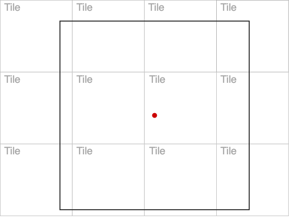
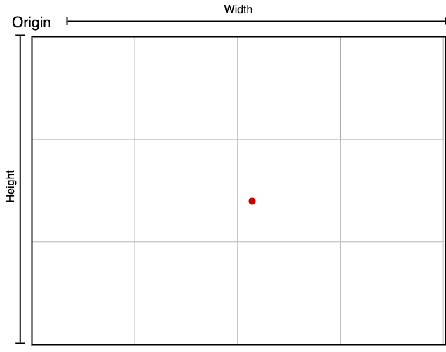

Extent
Creation
An Extent represents a map extent. It is created from a L.LatLngBounds:
const extent = new Extent((bounds: L.LatLngBounds));
A new Extent takes in a bounds object, and refits those bounds to the bounds of the tiles that fit inside it from a standard Web Mercator Tile Layer:
On extent creation, the tiles that fit within that extent are listed using xyz-affair:

The extent's bounds are set as the bounds of the tiles that fit in the L.LatLngBounds fed to new Extent:

Data fetching
Once created, extent.fetchData() can be called, which will fetch all data sources for the extent.
Growing an Extent
In an effort to download data on a "need-to-have" basis, an Extent starts with a default size. In each TimeStep, the algorithm assigns Cells within an Extent's BurnMatrix to have non-zero burn values. At the time of that assignment, the distance of the Cell from the edges of its Extent is checked, and if that distance falls below the config's threshold, the Extent expands. Depending on which edge the Cell is closest to, Extent will call expandUp, expandDown, expandRight, or expandLeft. These methods will expand the Extent's bounds and fetch all data tiles for the newly expanded parts of the Extent. expandUp and expandLeft will also reset the origin of the index and reset all the positions of the Cells associated with the Extent.
When an Extent grows by calling any of the above methods, it must be checked against all other Extents in the Campaign for potential overlap.